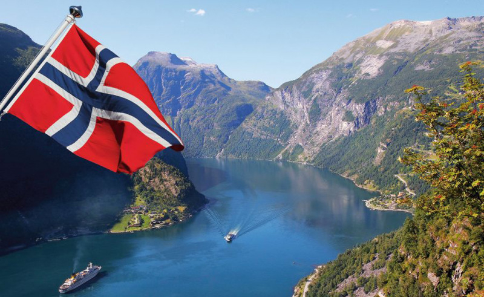
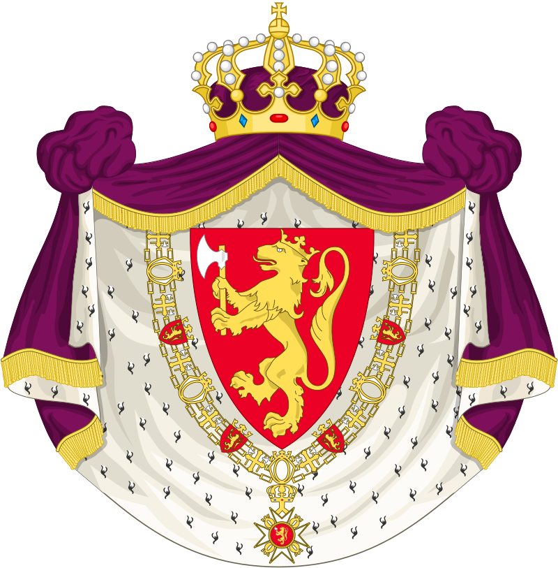
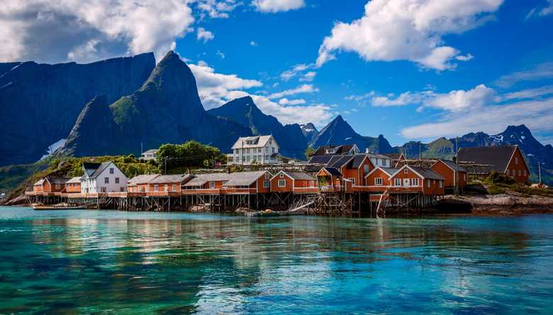
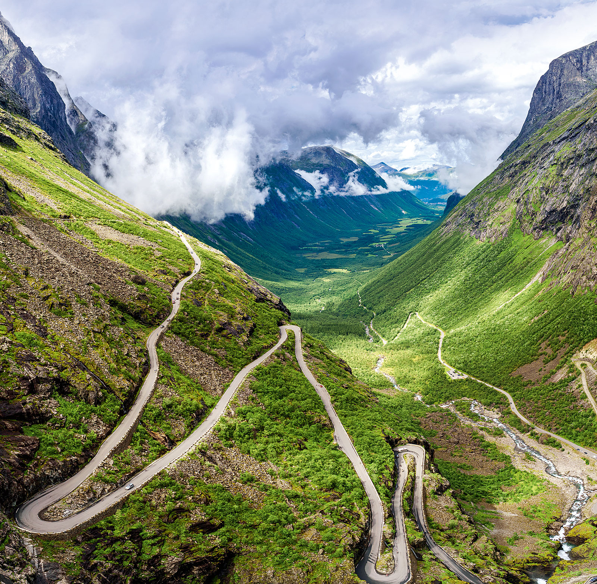
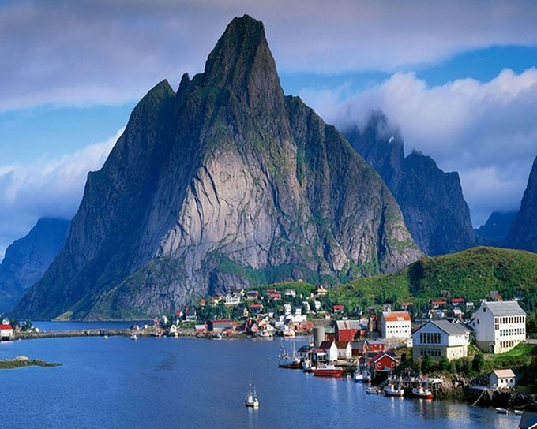
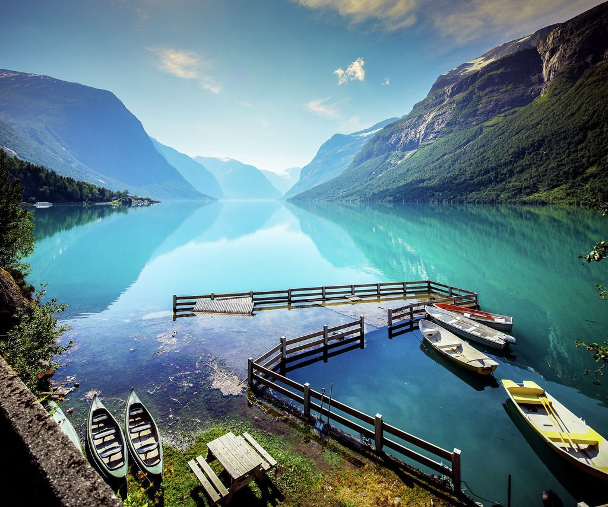
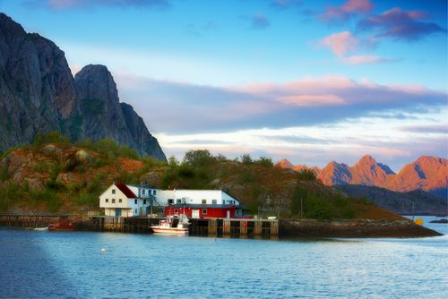
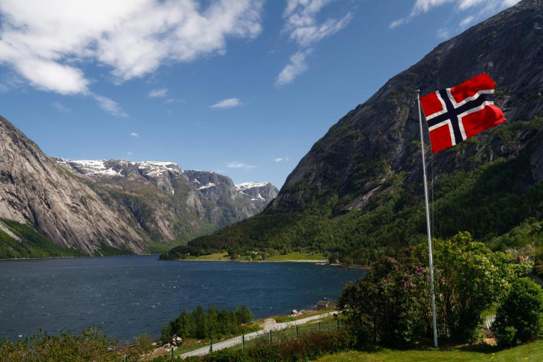

Краткая характеристика Норвегии


Норвегия – скандинавское страна, на территории которой расположены горы, ледники и глубокие прибрежные фьорды. Столица страны, город Осло, славится своими многочисленными парками, скверами и музеями. В коллекции Музея кораблей викингов собраны дубовые суда IX века. Из Бергена, где сохранилось множество разноцветных деревянных домов, ежедневно отправляются катера к величественному Согне-фьорду. В Норвегии популярны рыбалка, пеший туризм и катание на горных лыжах на курортах Лиллехаммера, где в 1994 году проходили Олимпийские игры. |
 |
Краткая характеристика Норвегии | |
| Флаг Норвегии | |
| Герб Норвегии |  |
| Расположение Норвегии | |
| Столица Норвегии | Осло |
| Крупные города Норвегии | Осло, Берген, Тронхейм, Ставангер |
| Дата основания | 872 год |
| Официальный язык | Норвежский (букмол и нюнорск) |
| Население | 5 295 619 человек |
| ВВП на душу населения | 59 600 долларов |
| Валюта | Норвежская крона |
| Форма правления | Конституционная монархия |
|  |  |
|  |  |
|  |  |